── Attaching core tidyverse packages ──────────────────────── tidyverse 2.0.0 ──
✔ dplyr 1.2.1 ✔ readr 2.2.0
✔ forcats 1.0.1 ✔ stringr 1.6.0
✔ ggplot2 4.0.2 ✔ tibble 3.3.1
✔ lubridate 1.9.5 ✔ tidyr 1.3.2
✔ purrr 1.2.2
── Conflicts ────────────────────────────────────────── tidyverse_conflicts() ──
✖ dplyr::filter() masks stats::filter()
✖ dplyr::lag() masks stats::lag()
ℹ Use the conflicted package (<http://conflicted.r-lib.org/>) to force all conflicts to become errorsWeek 13 Assignment
1. For Loop Basics (30 pts)
1a.
[1] 3
[1] 6
[1] 9
[1] 12
[1] 151b.
[1] 4.84
[1] 7.7
[1] 21.12
[1] 2.641c.
[1] "robin"
[1] "woodpecker"
[1] "blue jay"
[1] "sparrow"1d.
[1] 5.309292 13.854424 38.4845101e.
[1] 3.85 5.28 4.482. Size Estimates by Name (30 pts)
Rows: 500 Columns: 2
── Column specification ────────────────────────────────────────────────────────
Delimiter: ","
chr (1): species
dbl (1): lengths
ℹ Use `spec()` to retrieve the full column specification for this data.
ℹ Specify the column types or set `show_col_types = FALSE` to quiet this message.2a.
[1] 24341.68 27017.90 67453.38 22114.19 53884.76 52026.342b.
# A tibble: 6 × 3
species lengths masses
<chr> <dbl> <dbl>
1 Stegosauria 18.5 24342.
2 Ankylosauria 16.4 27018.
3 Ankylosauria 23.7 67453.
4 Sauropoda 23.9 22114.
5 Ankylosauria 21.7 53885.
6 Ankylosauria 21.4 52026.2c.
# A tibble: 4 × 2
species avg_mass
<chr> <dbl>
1 Ankylosauria 46819.
2 Sauropoda 16104.
3 Stegosauria 31924.
4 Theropoda 45572.3. Multi-file Analysis (40 pts)
3a.
[1] "3a"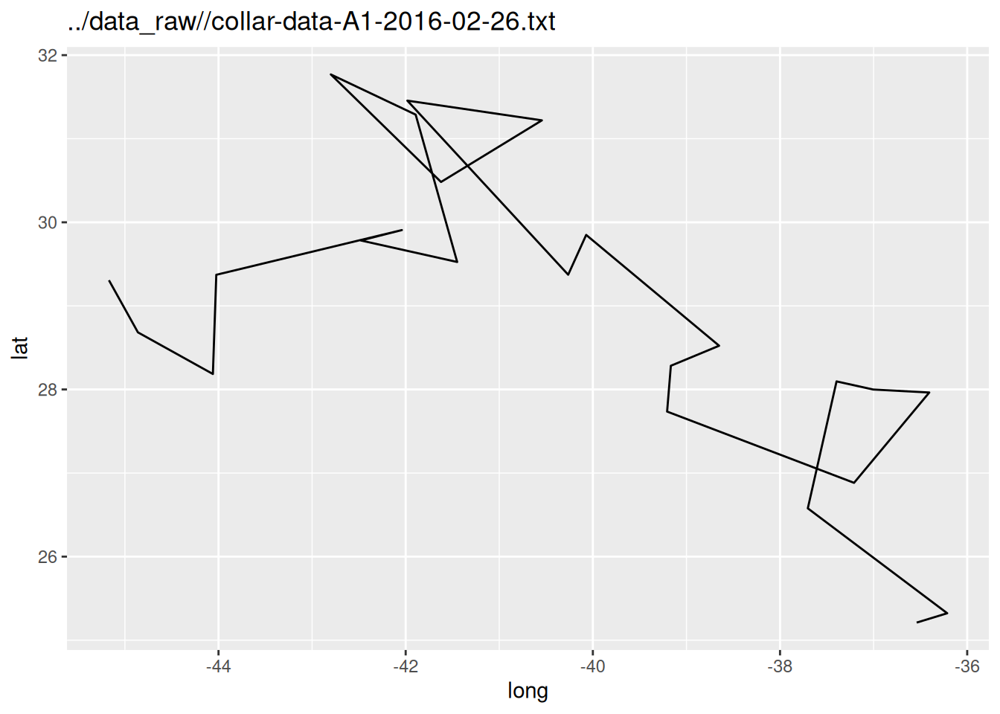
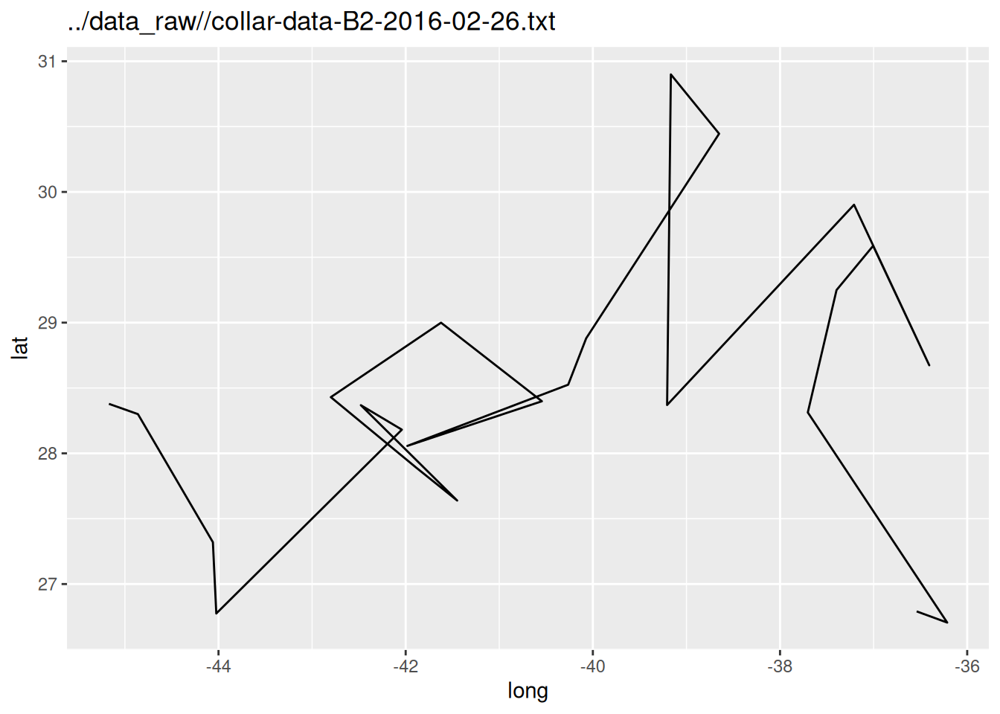
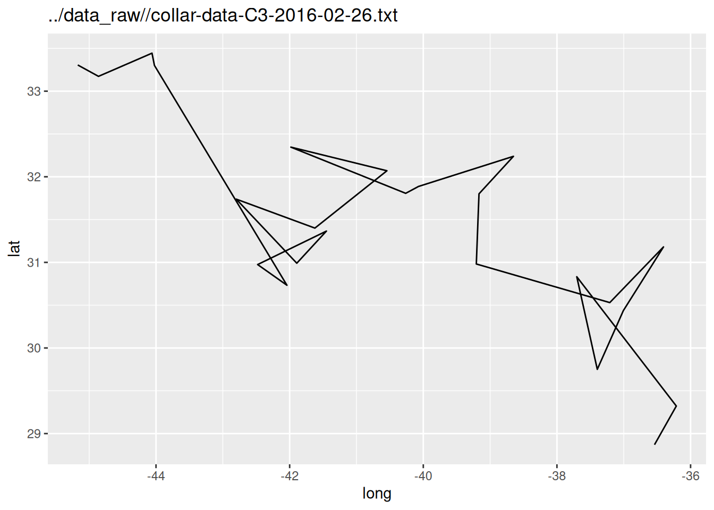
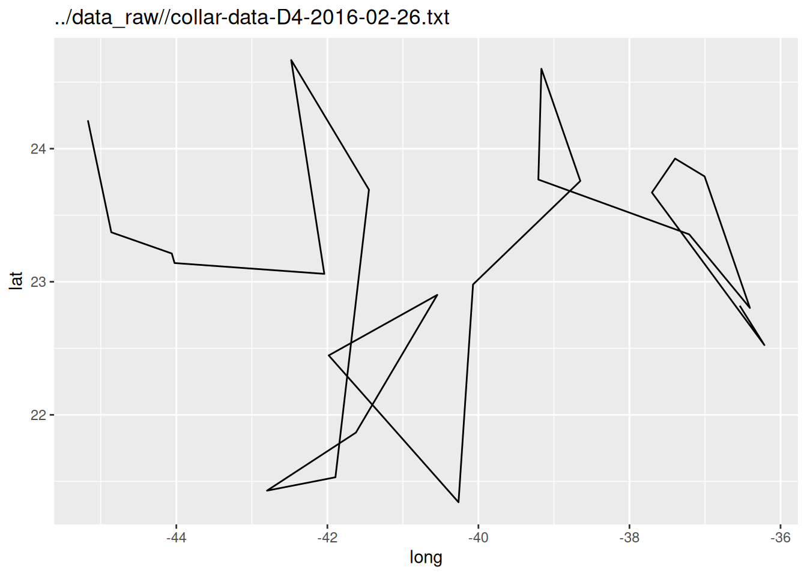
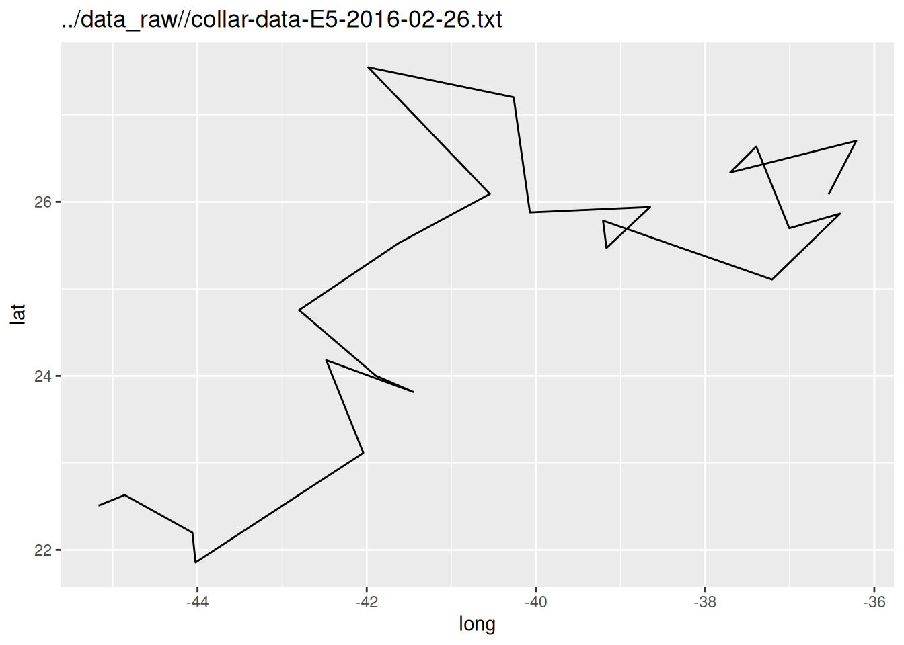
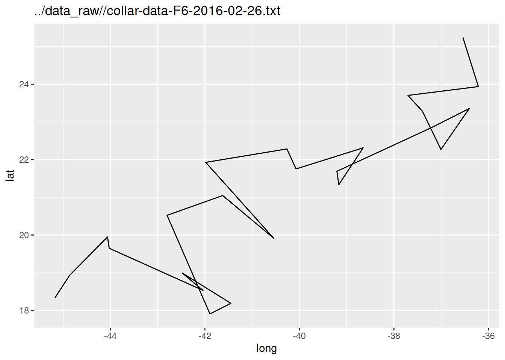
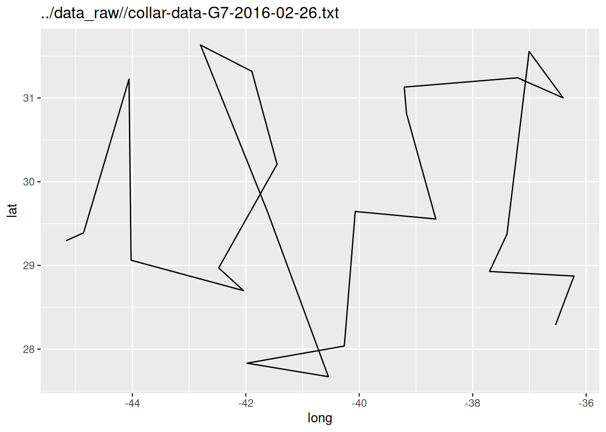
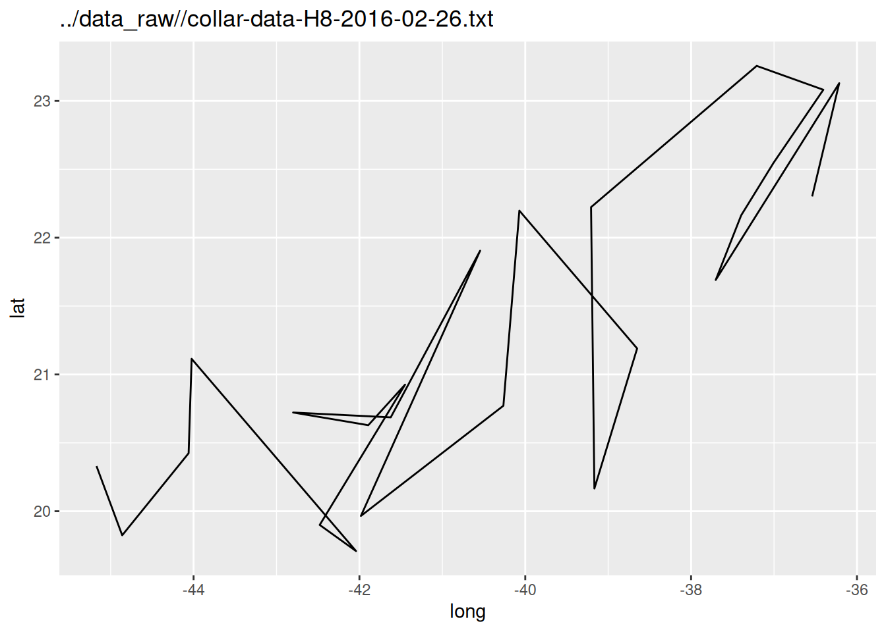
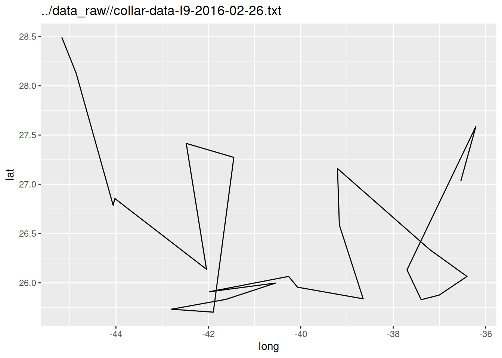
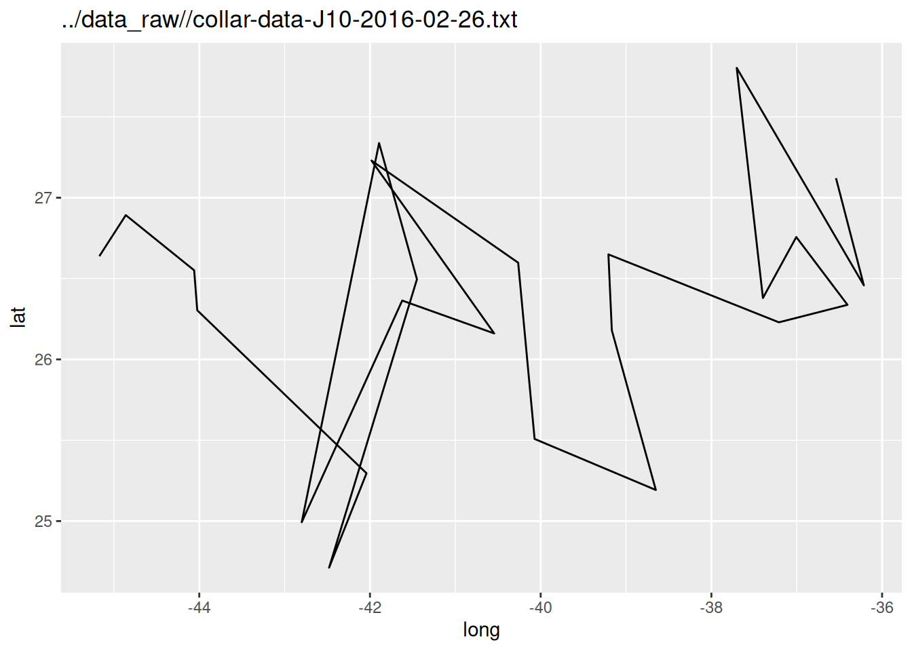
3b.
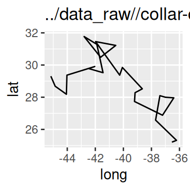
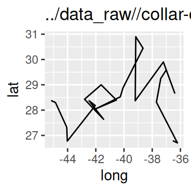
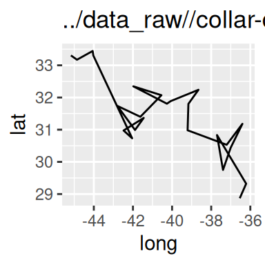
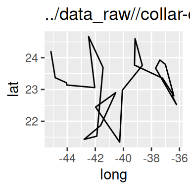
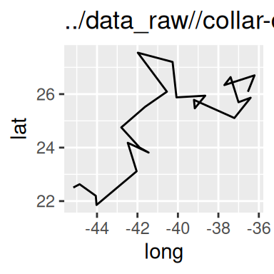
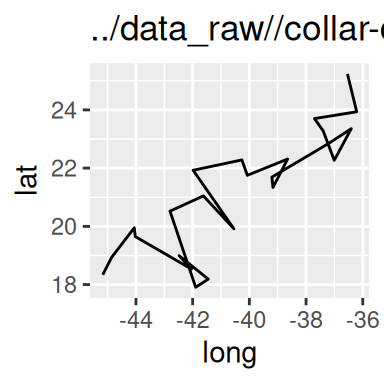
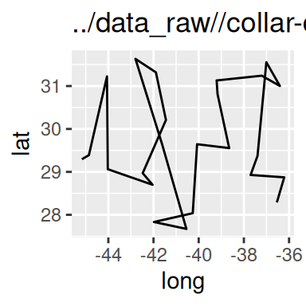
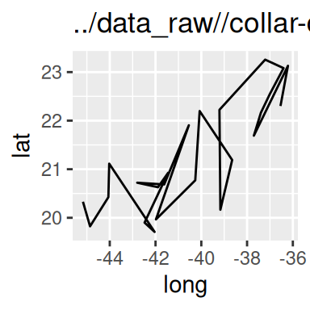
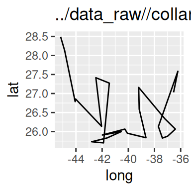
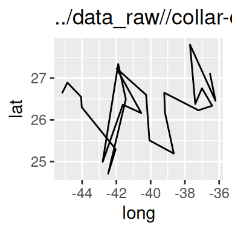
file_name max_lat min_lat observations
1 ../data_raw//collar-data-A1-2016-02-26.txt 31.76912 25.21080 24
2 ../data_raw//collar-data-B2-2016-02-26.txt 30.89907 26.70509 24
3 ../data_raw//collar-data-C3-2016-02-26.txt 33.44421 28.86998 24
4 ../data_raw//collar-data-D4-2016-02-26.txt 24.66598 21.34315 24
5 ../data_raw//collar-data-E5-2016-02-26.txt 27.54663 21.85565 24
6 ../data_raw//collar-data-F6-2016-02-26.txt 25.23623 17.90788 24
7 ../data_raw//collar-data-G7-2016-02-26.txt 31.63272 27.67120 24
8 ../data_raw//collar-data-H8-2016-02-26.txt 23.25601 19.70875 24
9 ../data_raw//collar-data-I9-2016-02-26.txt 28.49172 25.70252 24
10 ../data_raw//collar-data-J10-2016-02-26.txt 27.80325 24.71200 244. DNA or RNA (20 points)
4a.
[1] "DNA"[1] "RNA"[1] "UNKNOWN"4b.
[1] "DNA"
[1] "RNA"
[1] "UNKNOWN"
[1] "RNA"
[1] "RNA"4c.
type
1 DNA
2 RNA
3 UNKNOWN
4 RNA
5 RNA
sequence
1 ttgaatgccttacaactgatcattacacaggcggcatgaagcaaaaatatactgtgaaccaatgcaggcg
2 gauuauuccccacaaagggagugggauuaggagcugcaucauuuacaagagcagaauguuucaaaugcau
3 gaaagcaagaaaaggcaggcgaggaagggaagaagggggggaaacc
4 guuuccuacaguauuugaugagaaugagagcaccugaucagguggauaaggaagaugaagacu
5 gauaaggaagaugaagacuuucaggaaucuaauaaaaugcacuccaugaauggauucauguaugggaaucagccggguc4d.
type
1 DNA
2 RNA
3 UNKNOWN
4 RNA
5 RNA
sequence
1 ttgaatgccttacaactgatcattacacaggcggcatgaagcaaaaatatactgtgaaccaatgcaggcg
2 gauuauuccccacaaagggagugggauuaggagcugcaucauuuacaagagcagaauguuucaaaugcau
3 gaaagcaagaaaaggcaggcgaggaagggaagaagggggggaaacc
4 guuuccuacaguauuugaugagaaugagagcaccugaucagguggauaaggaagaugaagacu
5 gauaaggaagaugaagacuuucaggaaucuaauaaaaugcacuccaugaauggauucauguaugggaaucagccggguc4e. OPTIONAL
ttgaatgccttacaactgatcattacacaggcggcatgaagcaaaaatatactgtgaaccaatgcaggcg
"DNA"
gauuauuccccacaaagggagugggauuaggagcugcaucauuuacaagagcagaauguuucaaaugcau
"RNA"
gaaagcaagaaaaggcaggcgaggaagggaagaagggggggaaacc
"UNKNOWN"
guuuccuacaguauuugaugagaaugagagcaccugaucagguggauaaggaagaugaagacu
"RNA"
gauaaggaagaugaagacuuucaggaaucuaauaaaaugcacuccaugaauggauucauguaugggaaucagccggguc
"RNA" 4f. OPTIONAL
# A tibble: 5 × 2
# Rowwise:
type sequences
<chr> <chr>
1 DNA ttgaatgccttacaactgatcattacacaggcggcatgaagcaaaaatatactgtgaaccaatgcaggcg
2 RNA gauuauuccccacaaagggagugggauuaggagcugcaucauuuacaagagcagaauguuucaaaugcau
3 UNKNOWN gaaagcaagaaaaggcaggcgaggaagggaagaagggggggaaacc
4 RNA guuuccuacaguauuugaugagaaugagagcaccugaucagguggauaaggaagaugaagacu
5 RNA gauaaggaagaugaagacuuucaggaaucuaauaaaaugcacuccaugaauggauucauguaugggaau…